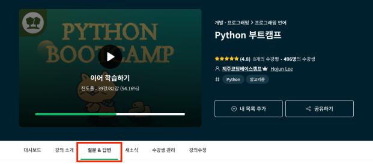

서포터즈 활동 안내
안녕하세요? 제주코딩베이스캠프 서포터즈에 관심을 가져주셔서 감사합니다. 서포터즈를 신청하기에 앞서 제주코딩베이스캠프가 아래 준비한 활동 안내 사항을 확인하여 주시기 바랍니다. 🙂-
제주코딩베이스캠프 서포터즈
- 접수 시작 : 5월 24일 월요일
- 모집 인원 : 7명
- 활동 기간 : 3개월(7월 1일(목) ~ 9월 30일(목))
- 활동비 : 10만 원
-
서포터즈 활동 장소, 시간
제코베 서포터즈는 2021년 7월 1일부터 장소, 시간에 관계없이 자유롭게 활동이 가능합니다.
-
서포터즈 활동의 기준
서포터즈 활동은 다음과 같습니다.
- 제코베 강의 수강 후기글 작성
- 제코베 굿즈 사용 후기 작성
- 제코베 인프런 강의 수강평 작성
- (주)위니브 온/오프라인 행사 참여 후기 작성
-
활동 가능한 SNS 기준
인스타그램, 페이스북, 네이버 블로그 등 공개된 개인 SNS라면 어디에서든 서포터즈 활동과 관련한 게시글을 업로드할 수 있습니다.
-
게시글을 업로드시 필수로 작성되어야 할 내용
글은 자유롭게 작성해 주시되, #제주코딩베이스캠프 태그는 꼭 달아주시기 바랍니다.
-
활동 내용 보고 방법
월말 활동 보고를 통해 서포터즈 활동 진행 상황을 확인합니다. 아래 예시와 같이 월 말에는 활동 내용(게시글 링크)과 함께 활동 보고를 해야 합니다. 수강평과 같은 후기 활동인 경우에는 캡처화면을 함께 공유해 주시길 바랍니다. 활동 보고를 하지 않을 경우 서포터즈 활동을 하지 않은 것으로 간주되며, 이후 수료증 및 활동비 지급이 어려울 수 있습니다.
서포터즈 활동 보고 예시
[7월 서포터즈 활동] 이름 : 홍길동 링크 : www··· 링크 : www···
-
제코베 서포터즈 수료증 및 활동비 지급 기준
서포터즈 활동을 월 2회 이상, 3개월 총 6회 이상 성실하게 활동해 주신 분에게 활동 종료 후 수료증과 활동비를 지급합니다. 이 과정에서 여러분의 개인 정보(계좌번호, 예금주 명 등)를 수집할 수 있습니다.
-
서포터즈 활동 중단
서포터즈 활동 시작일 기준으로 활동에 필요한 강의와 굿즈가 제공되었기 때문에 단순 변심으로 인한 서포터즈 활동을 중단하는 것은 불가능합니다. 하지만 개인적인 사정이 있어 활동을 중단해야 하는 분께서는 사유를 이야기해 주시기 바랍니다.
-
서포터즈 활동과 관련된 질문과 답변
서포터즈 활동 중 궁금한 사항이 있다면 다른 분들과 질문 내용을 공유할 수 있도록 서포터즈 단체 톡을 활동해 주세요. 단, 답변 가능 시간을 확인 후 질문해 주시길 바랍니다. 이외의 시간에 질문을 주실 경우 답변이 어려운 점 양해부탁드립니다.
질문&답변 가능 시간 : 평일 월~목, 10:00~17:00 -
서포터즈에게 제공되는 온라인 강의
서포터즈 여러분들께 제공되는 온라인 강의는 '인프런'에서 공개된 '제주코딩베이스캠프'강의 내에서만 제공됩니다. 강의는 수량 제한 없이 제공 받으실 수 있으며, 서포터즈 활동 중에 추가로 강의 요청이 가능합니다. 강의 요청은 서포터즈 단체 톡을 통해 가능하며 확인 후 수강 등록을 도와드립니다.
제주코딩베이스캠프 인프런 강의 살펴보기 -
제주코딩베이스캠프 강의 질문하기
강의 시청 도중에 궁금한 내용이 생겼다면 인프런에서 해당 강의 질문하기를 통해서 질문해 주시면 답변을 남겨드립니다.
 -
굿즈 제공 방식
제주코딩베이스캠프의 개발자 굿즈 4종(노트북 파우치, 키링, 코딩 연습장, 스티커팩)을 제공합니다. 이 과정에서 서포터즈 여러분의 개인정보(이름, 전화번호, 주소 등)를 수집할 수 있습니다. (서포터즈 활동에 불성실하거나, 중도에 서포터즈 활동을 중단한 경우에는 배송이 되지 않습니다.)
굿즈는 아래 방식으로 제공됩니다.- 웰컴! 코딩 연습장, 스티커팩 : 7월 첫째 주 배송
- 개발자 금속 키링 2종 : 8월 첫째 주 배송
- 개발자 노트북 파우치 : 9월 첫째 주 배송
-
서포터즈 활동 내용 활용 관련
서포터즈 여러분께서 서포터즈 기간 내에 활동하신 내용(SNS 게시물, 수강평 등)은 제주코딩베이스캠프 관련 프로모션 등에 사용될 수 있습니다. 또한 필요한 범위 내에서는 일부 수정, 복제, 편집되어 게시될 수 있습니다.